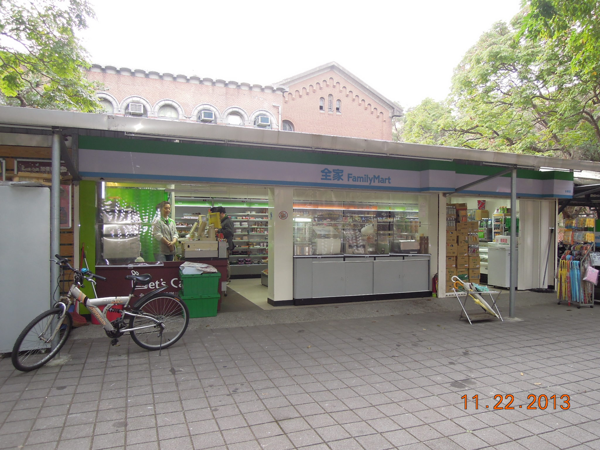
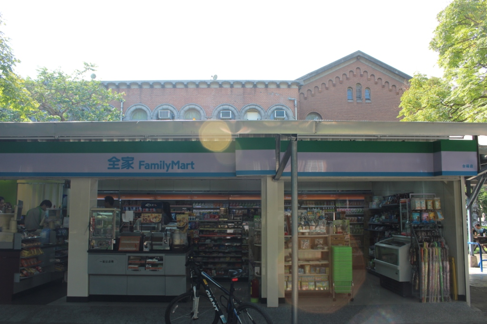

全家便利商店(台福店)
- 本校營業地點位置 文學院及單車維修部旁
- 餐飲業者名稱 全家便利商店(台福店)
- 公司名稱 全家便利商店股份有限公司
- 營業時間及休息日 07:00-22:30
- 聯絡電話 8369-1892
- 網址
- 營業項目、型態 便利商店
- 業者簡介
-
全家便利商店於1988年由日本引進台灣，8月18日全家便利商店股份有限公司成立，全家在地深耕20餘年，深入社區，服務在地居民，提供便利、快速的商品服務之外，「主動為顧客多想一點」的服務理念下，多次取得遠見雜誌便利商店服務力調查第一的殊榮。
秉持創新精神，全家多次成功導入創新服務，不僅開闢藍海市場，同時帶來更貼近顧客的新服務。
餐廳業者參考照片
- 

- 